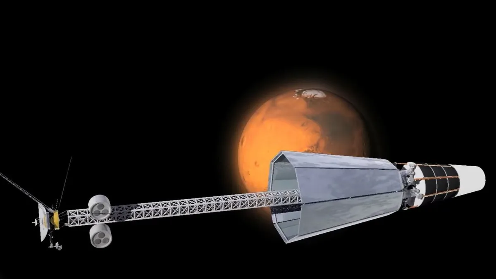

Posted 1d ago
Los Alamos National Laboratory's concept of a space nuclear reactor system to produce high-power electricity
Lockheed Martin has been handed a contract to work on nuclear-powered spacecraft technologies.
The U.S. Air Force Research Laboratory (AFRL) awarded $33.7 million to Lockheed Martin as part of the Joint Emergent Technology Supplying On-Orbit Nuclear (JETSON) effort to "mature high-power nuclear electric power and propulsion technologies and spacecraft design."
JETSON aims to launch a fission reactor that will be started up once in space. The reactor will generate heat, which is then transferred to Stirling power converters to produce electricity. This can then be used to power spacecraft payloads or electric thrusters for propulsion.
The reactor builds on NASA's earlier Kilopower Reactor Using Stirling Technology (KRUSTY) demonstration in 2018."Nuclear fission development for space applications is key to introducing technologies that could dramatically change how we move and explore in the vastness of space," Barry Miles, JETSON program manager and principal investigator at Lockheed Martin, said in a statement.
"From high-power electrical subsystem and electric propulsion to nuclear thermal propulsion or fission surface power, Lockheed Martin is focused on developing these systems with our important government agencies and industry partners," Miles added.
On JETSON, Lockheed will work with Space Nuclear Power Corp (SpaceNukes) and BWX Technologies, Inc. (BWXT), both of which have expertise in nuclear power and reactor design. The project is currently in the preliminary design review stage, with the option to go to critical design review level."A future JETSON flight experiment will enhance maneuver and power capabilities shaping future space force operations," said Andy Phelps, CEO of SpaceNukes.
The contract award was announced on Sept. 29, along with contracts for two other players under JETSON. Houston-based startup Intuitive Machines also received a $9.4 million contract. It will design a spacecraft concept utilizing a compact radioisotope power system. The startup is also preparing to launch its private moon lander in January.
In addition, Westinghouse Government Services, based in South Carolina, received a contract to continue research into utilizing high-power nuclear fission systems in spacecraft.The new award to Lockheed Martin is another win for the company in the field of space nuclear power. In July, NASA and the U.S. military chose the aerospace giant to develop and launch a spacecraft to test nuclear thermal propulsion in space. The project, known as DRACO ("Demonstration Rocket for Agile Cislunar Operations"), could feature a propulsion system that's a number of times more efficient than traditional chemical methods.